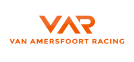
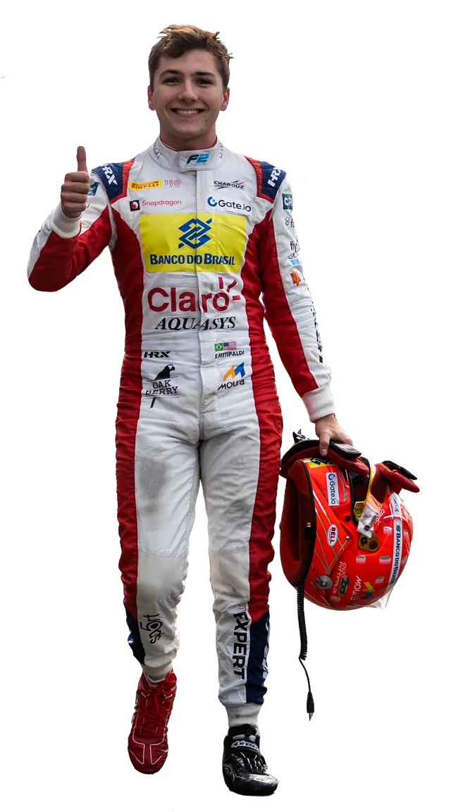

VAN AMERSFOORT RACING

Van Amersfoort Racing, uno de los equipos europeos más reconocidos en el desarrollo de carreras
de automovilismo, ha entrado en una nueva era en su exitosa historia de cuatro décadas.
La estructura con sede en Zeewolde, Países Bajos, establecida en 1975 por Frits Van Amersfoort, ha llevado a cabo en el transcurso de los últimos años con orgullo un programa integral de modernización. Involucró importantes inversiones y el establecimiento de una nueva sede central de última generación para mejorar su participación en dos importantes programas de desarrollo: FIA Fórmula 3 Europea y ADAC Fórmula 4. En 2022, la escudería ingresó al Campeonato de Fórmula 3 de la FIA y el Campeonato de Fórmula 2 de la FIA en reemplazo de HWA RACELAB
La estructura con sede en Zeewolde, Países Bajos, establecida en 1975 por Frits Van Amersfoort, ha llevado a cabo en el transcurso de los últimos años con orgullo un programa integral de modernización. Involucró importantes inversiones y el establecimiento de una nueva sede central de última generación para mejorar su participación en dos importantes programas de desarrollo: FIA Fórmula 3 Europea y ADAC Fórmula 4. En 2022, la escudería ingresó al Campeonato de Fórmula 3 de la FIA y el Campeonato de Fórmula 2 de la FIA en reemplazo de HWA RACELAB

Enzo Fittipaldi - Es un piloto de automovilismo brasileño nacido en Estados
Unidos. Actualmente es miembro de la Escudería Telmex. Fue campeón de la Fórmula 4
Italiana en 2018, y subcampeón del Campeonato de Fórmula Regional Europea en 2019.
Actualmente corre en la FIA Fórmula 2.
Pilota con el
número 15.
| País de procedencia | Brasil |
| Fecha de nacimiento | 18/07/2001 |
Esperando ser anunciado. - Aún no se sabe quien sera el piloto 16 de este equipo.
| País de procedencia | - |
| Fecha de nacimiento | - |